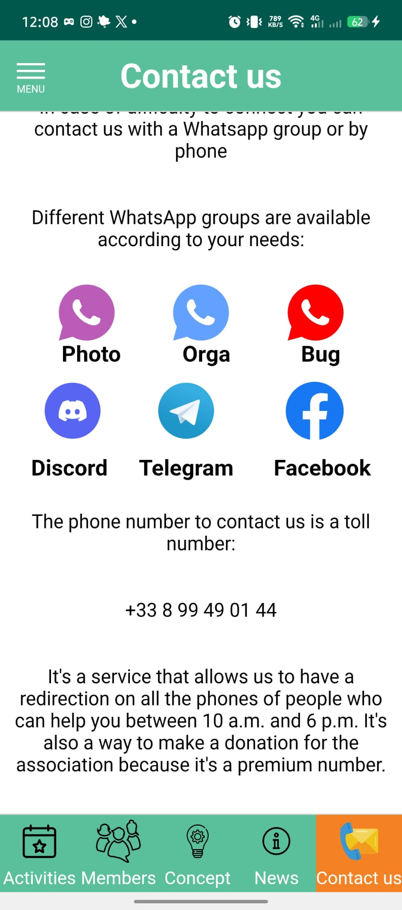
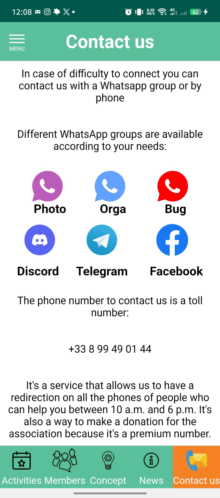
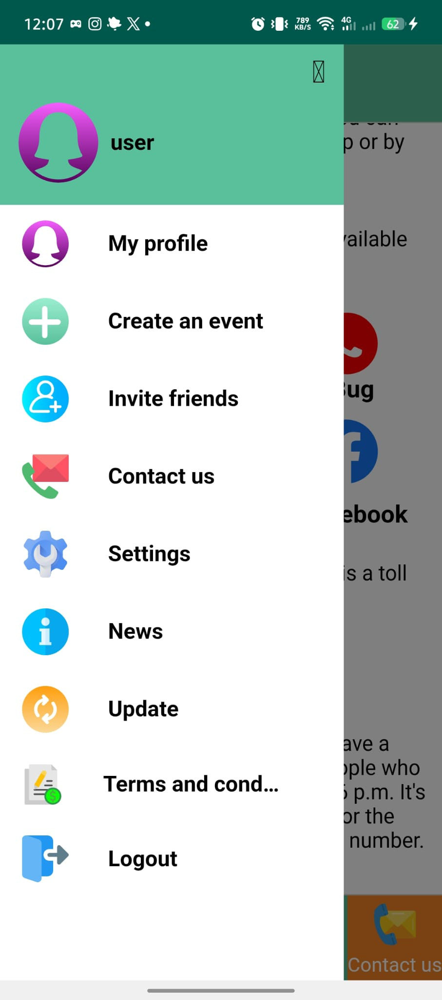

Console Admin — Socializus
Développement Fullstack & intégration d'une console d'administration web responsive, sécurisée pour la modération des utilisateurs et le pilotage des données en temps réel.

Rôle
Développement, tests et documentation
Contexte
Stage 2 mois — ARTEM 5
Objectifs
Sécurité • UX • Modération
Stack
NestJS • MongoDB • Docker
Le projet en bref
Pendant mon stage chez ARTEM 5, j’ai contribué à la version 2026 de Socializus, une application disponible sur mobile et sur le web. Mon travail a couvert l’analyse de l’existant, les tests, la correction de composants, l’adaptation responsive et la préparation d’une documentation claire pour les futurs développeurs.


Environnement technique
- Front-End : HTML5, CSS3 (Flexbox & Grid), JavaScript ES6
- Back-End : NestJS (Node.js)
- Base de données & Infra : MongoDB Compass, Docker
- Design & Outils : Figma (extraction de styles), GitHub Desktop
Missions principales
- Prise en main et qualification : étude de l’architecture, configuration des accès et de l’environnement, puis tests fonctionnels sur le web et sur simulateur mobile afin d’identifier les anomalies et de proposer des pistes de résolution.
- Évolution des interfaces : réorganisation et amélioration des maquettes Figma de la version 2026, puis intégration des styles et des composants dans le respect de l’arborescence du projet.
- Responsive et compatibilité : adaptation des écrans pour le web, l’iPhone XR et les appareils Samsung Note, avec contrôle de la lisibilité, de la navigation et du comportement des composants.
- Fonctions d’administration : amélioration de composants de type activation/désactivation, bannissement et shadow ban, avec vérification de leur fonctionnement dans l’interface.
- Connexion de l’environnement local : utilisation de Docker et MongoDB Compass pour relier le back-end, la base de données et le simulateur, puis reproduire les scénarios de test en local.
Missions secondaires et transmission
- Préparation en amont : parcours de formations Udemy, YouTube, Grafikart et OpenClassrooms, puis réalisation d’un exercice de validation sous Android Studio avant le démarrage du stage.
- Documentation technique : rédaction et amélioration du README, ajout de commentaires, de liens de formation et d’un guide de prise en main destiné aux futurs stagiaires et développeurs.
- Travail collaboratif : utilisation de GitHub Desktop, VS Code, Figma et des points d’équipe à distance pour partager l’avancement et structurer les livrables.
Veille technologique
Pendant le stage, j’ai préparé une veille technologique axée sur les solutions de modération, l'architecture des applications web sécurisées, et les technologies de conteneurisation pour un déploiement fiable.
- Thème principal : Sécurité et modération des plateformes collaboratives.
- Objectif : Identifier des bonnes pratiques pour protéger les données utilisateurs et renforcer la stabilité de l’application.
- Cahier des charges : comparer NestJS, MongoDB, Docker avec d'autres stacks, analyser le support des rôles et l'implémentation de shadow ban.
- Résultat : synthèse de la veille, recommandations techniques et présentation orale devant l'équipe.
- Avance : j’ai élaboré une base de veille structurée à enrichir par des cas d’usage, des benchmarks et des tendances 2026.
Avancement de la veille technologique
Cette veille est déjà organisée en plusieurs axes :
- Analyse : comparaison des frameworks Node.js, des bases NoSQL et des pratiques de sécurité applicative.
- Focus tendance : déploiement conteneurisé, CI/CD, monitoring et observabilité des applications web.
- Évolution : formulation de pistes d'amélioration pour Socializus, comme l'ajout de logs d'audit et de tableaux de bord d'alerte.
Documents du stage
Consultez la documentation Socializus, le relevé détaillé des tâches et la veille technologique associée.
Confidentialité du code source
Le dépôt de l’entreprise n’est pas publié dans ce portfolio. Les documents et captures ci-dessus présentent le travail réalisé sans exposer le code privé de Socializus.